yo, what's up?
so if you’ve made it here, i’m guessing you’re not just out here
looking for the usual. nah, you wanna do something that counts.
something that’s bigger than just vibing through your days,
wasting time scrolling through random stuff, or waiting for
another boring class to end.
and honestly, that’s why you’re still reading. ‘cause maybe, just
maybe, there’s a little spark in you, something that’s been
nudging you, whispering, “hey, there’s more to this than just your
everyday routine. you’ve got something to offer, something to
give.” maybe you’re starting to feel like, “yo, i could be doing
something real right now,” instead of just watching life pass by,
doing the same thing, day in and day out. and yeah, we totally get
that.
that’s why
stemifyy
exists.
and listen, you don’t need to be a genius or have years of
experience to join us. it’s not about that. all we’re asking for
is some passion, a little bit of your time, and a mindset that’s
all about helping others. we’ll handle the rest together. you
don’t need to be perfect – you just need to show up and give a
damn.
if you’re still here and nodding along, well, that’s a sign, isn’t
it?
so, if all of this is hitting right, and you’re feeling like
you’re ready to jump into something that actually matters, then go
ahead and
click here to join us
. let’s chat, figure out where you fit into the crew, and get
moving. you’ll get to meet other chill, like-minded people who are
in it for the same reasons. and yeah, you might just make some
cool friends along the way, too. i mean, that’s how our team came
together – a bunch of people with the same drive, and now we’re
out here doing something real.
but hey, if you’re still on the fence, that’s okay too. no
pressure. just think about this for a sec: a year from now, you
could either be looking back at a bunch of random days that flew
by with nothing major happening, or you could be saying, “yeah, i
helped build something that’s changing lives.” which one sounds
better?
and look, we’re not saying you have to decide right now, at this
exact moment. take your time. mull it over. but just know,
whenever you’re ready, we’ll be here. we’re not going anywhere.
we’ve got some massive plans cooking, and trust me, you’re not
gonna want to miss out on being a part of it.
the world’s moving fast. don’t let it pass you by without leaving
your mark on it.
so, yeah. don’t sleep on this, fam.
fill this out asap!!
we’ll be here when you’re ready. let’s make something epic
together.
peace. ✌️
cc: crew@stemifyy.org
oh btw, here’s a photo dump to keep it fresh. gotta keep the vibes
alive, right?
check us out on ig @stemifyy for all the cool behind-the-scenes,
updates, and whatever randomness we get up to. trust me, you don't
wanna miss out.
and fr, don’t sleep on the join us button – let’s actually build
something that matters. no cap.
stay lit 🔥
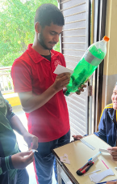
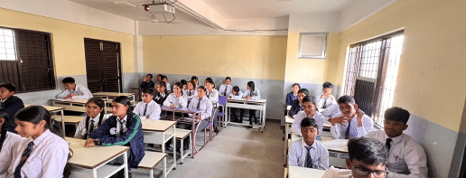
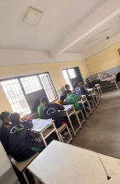
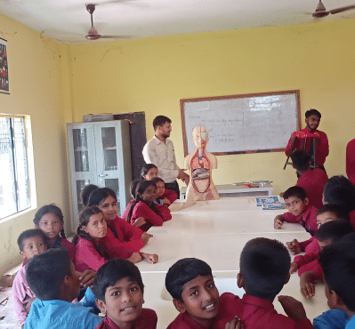
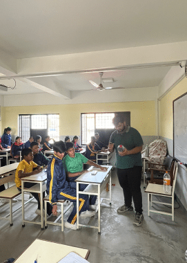
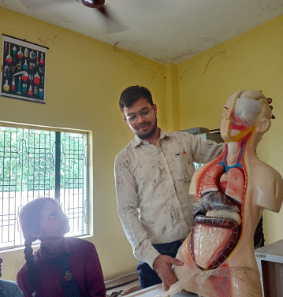
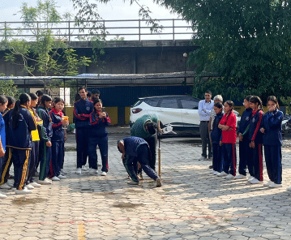
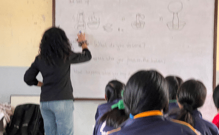
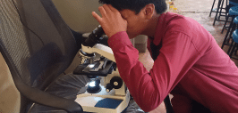
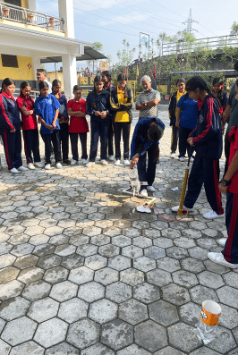
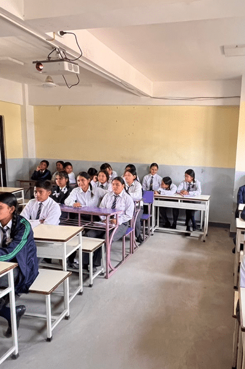
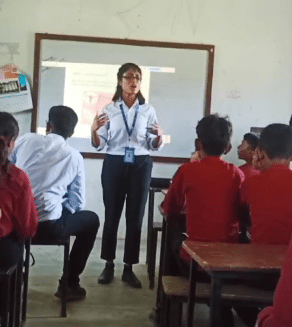
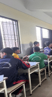
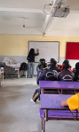
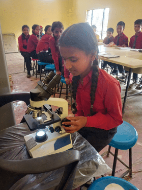
we’re here to do the stuff that actually matters. no bs, no fluff
– just straight-up impact. you know the deal – the world is built
on STEM. coding, AI, robotics, engineering – all those things that
are literally shaping the future right now. but let’s be real for
a sec: not everyone gets to be a part of that. some people, just
because of where they’re born, the school they go to, or what
resources they’ve got access to – they don’t get a fair shot at
all that future stuff. and if you think that’s messed up, you’re
not alone. we think it’s pretty broken too.
now, we could all just sit back, pretend it's not happening, and
dive deeper into our own worlds. like, we could be out here
binging on netflix or endlessly swiping on tiktok like zombies.
but that’s not what we’re about. if you’re still here, we’re
betting you’re not about that either. you’re here because you want
to do something. and guess what? so do we.
that’s the core of stemifyy. we’re a crew of people who believe
that STEM isn’t just for a select few – it’s for everyone. whether
you’re living in the heart of some bustling city or you’re from a
small, remote village that doesn’t even show up on google maps,
you should have access to the same stuff: tools to learn, the
chance to create, the opportunity to innovate. ‘cause in the end,
it’s people like us, the next generation, who are gonna be pushing
the world forward.
we’re not some mega-corporation or a team of old dudes in suits.
nah, we’re students, dreamers, nerds, and creators who are just
trying to make this world a bit fairer. people like
sanskar, atharv, aditya, aishani, aishnika, shreya
and the whole crew – we’ve been there, grinding through the
system, realizing that something needs to change. so we decided to
stop talking and actually do something about it. and here we are,
making moves, setting up workshops, creating cool content, and
spreading the word like wildfire. but you know what? we’re still a
small team. and there’s only so much we can do alone.
this is where you come in.
we’re not gonna sit here and tell you to “volunteer” like it’s
some boring task that your parents made you do. nah, this is
different. this is about stepping up and actually making a dent in
something real. it’s about being part of something that, when you
look back a few months or a year from now, you’ll feel proud of.
not just some ticked-off box on your resume. nah, it’s more like
building something that actually sticks around. imagine this:
there’s a kid out there who’s never even touched a computer, and
now they’re figuring out how to code because you were a part of
this. that’s the kind of change we’re talking about.
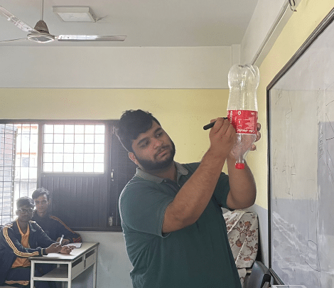
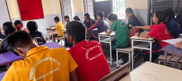
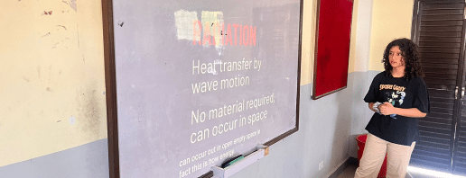